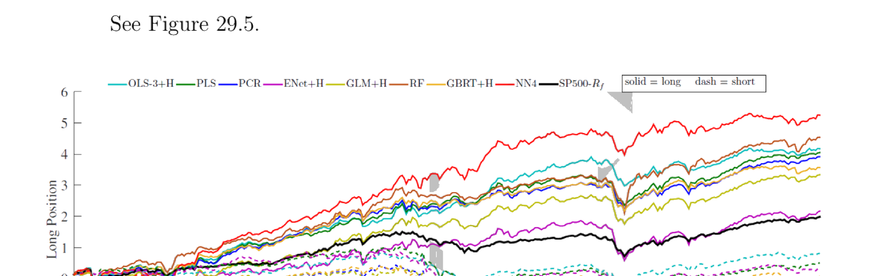
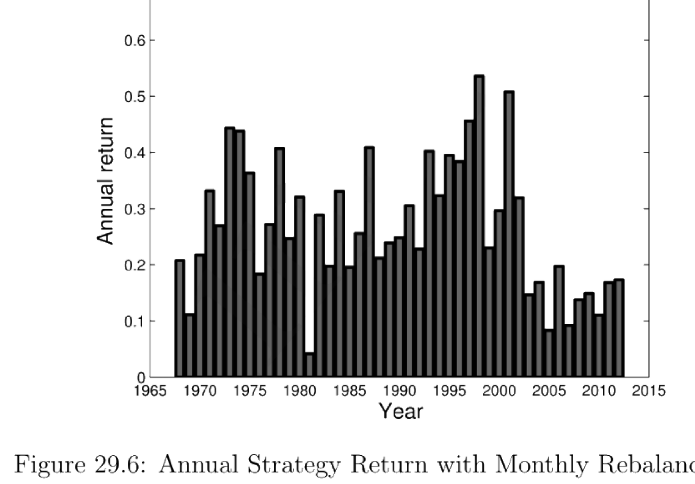

29. Machine Learning in Asset Pricing
本章综述把机器学习用于资产定价的前沿研究（计量经济学家/投资者用历史数据预测未来；或市场内投资者本身是机器学习者）。与典型 ML 问题相比，资产定价的特点是：极低信噪比、预测变量多但观测少、关心组合（而非个体）结果、预测误差协方差是组合风险的关键、稀疏性不明、且存在结构变化（投资者从数据学习并适应）。四篇代表作：(§29.1) Gu-Kelly-Xiu (2018) 系统比较六类 ML 模型（OLS、惩罚线性、PCR/PLS、广义线性、提升树/随机森林、神经网络）的样本外预测表现——树与神经网络最好、浅层胜于深层，非线性交互显著改善预测，ML 组合相对买入持有提升约 26% 年化夏普比率；(§29.2) Moritz-Zimmermann (2016) 用回归树做条件组合排序，仅以过去收益为预测变量，发现短期反转最关键；(§29.3) Bryzgalova et al. (2020) AP-Trees 用树构造基资产 (basis assets) 张成 SDF，再用弹性网剪枝 (29.15–29.20) 得稀疏稳定的可解释因子；(§29.4) Monti et al. (2018) RAP 为非平稳流数据自适应地实时更新 lasso 正则化参数 \(\lambda_t\) (29.22–29.27)。
This chapter surveys frontier research applying machine learning to asset pricing (econometricians/investors using historical data to predict the future; or investors inside the market being machine learners themselves). Compared with typical ML problems, asset pricing features: very low signal-to-noise, many predictors but few observations, caring about portfolio (not individual) outcomes, prediction-error covariances being crucial for portfolio risk, unclear sparsity, and structural change (investors learn from data and adapt). Four representative papers: (§29.1) Gu-Kelly-Xiu (2018) systematically compares six ML model classes (OLS, penalized linear, PCR/PLS, generalized linear, boosted trees/random forests, neural networks) on out-of-sample prediction — trees and neural networks perform best, shallow beats deep, nonlinear interactions substantially improve prediction, and ML portfolios deliver ~26% higher annualized Sharpe ratio than buy-and-hold; (§29.2) Moritz-Zimmermann (2016) uses regression trees for conditional portfolio sorts with only past returns as predictors, finding short-term reversal most crucial; (§29.3) Bryzgalova et al. (2020) AP-Trees uses trees to construct basis assets spanning the SDF, then elastic-net pruning (29.15–29.20) for sparse, stable, interpretable factors; (§29.4) Monti et al. (2018) RAP adaptively updates the lasso regularization parameter \(\lambda_t\) in real time for non-stationary streaming data (29.22–29.27).
29.1 Model Comparative Study: Gu et al. (2018)
29.1.1 / 29.1.2 Key Points & Data
Gu et al. (2018) 用三要素定义资产定价中的"机器学习"：多样的高维统计预测模型、带过拟合缓释的正则化模型选择、在大量潜在模型设定中搜索的高效算法。讨论六类模型（见下）。数据：CRSP 1957.3–2016.12 全 NYSE/AMEX/NASDAQ 月度个股收益（约 30,000 只，月均 6,200）；94 个公司特征（61 年频/13 季频/20 月频）+ 74 个行业虚拟（SIC）；8 个宏观预测变量（Welch-Goyal 2008：股息-价格比 dp、盈利-价格比 ep、账面市值比 bm、净股本扩张 ntis、国库券利率 tbl、期限利差 tms、违约利差 dfy、股票方差 svar）。结论：用惩罚或降维时，大预测变量集对线性预测可行；允许非线性交互显著改善；最好的方法是树与神经网络（浅层胜于深层）；ML 方法盈利（相对买入持有年化样本外夏普比率 +26%）；主导预测信号含动量、流动性、波动率的各种变体。
29.1.3 Setup & Sample Splitting
股票 \(i=1,\dots,N_t\)、月 \(t=1,\dots,T\)（平衡面板 \(N_t=N\)）。股 \(i\) 从 \(t\) 到 \(t+1\) 超额收益 \(r_{i,t+1}\)，\(P\) 维原始预测变量 \(\mathbf z_{i,t}\)，加性预测误差 \(\epsilon_{i,t+1}\)。一般式 \(r_{i,t+1}=\mathbb E_t[r_{i,t+1}]+\epsilon_{i,t+1}\)，其中 (29.1)：
29.1.1 / 29.1.2 Key Points & Data
Gu et al. (2018) define "machine learning" in asset pricing by three elements: a diverse collection of high-dimensional statistical models, regularization for model selection with overfit mitigation, and efficient algorithms searching among many potential model specifications. They discuss six model classes (below). Data: CRSP 1957.3–2016.12 monthly individual returns for all NYSE/AMEX/NASDAQ firms (~30,000, ~6,200/month); 94 firm characteristics (61 annual/13 quarterly/20 monthly) + 74 industry dummies (SIC); 8 macro predictors (Welch-Goyal 2008: dividend-price ratio dp, earnings-price ep, book-to-market bm, net equity expansion ntis, T-bill rate tbl, term spread tms, default spread dfy, stock variance svar). Conclusions: large predictor sets are feasible for linear prediction with penalization or dimension reduction; allowing nonlinear interactions substantially improves prediction; the best methods are trees and neural networks (shallow beats deep); ML methods are profitable (+26% annualized out-of-sample Sharpe ratio vs buy-and-hold); dominant predictive signals include variations of momentum, liquidity, and volatility.
29.1.3 Setup & Sample Splitting
Stocks \(i=1,\dots,N_t\), months \(t=1,\dots,T\) (balanced panel \(N_t=N\)). Stock \(i\)'s excess return \(r_{i,t+1}\) from \(t\) to \(t+1\), \(P\)-dim raw predictors \(\mathbf z_{i,t}\), additive prediction error \(\epsilon_{i,t+1}\). General form \(r_{i,t+1}=\mathbb E_t[r_{i,t+1}]+\epsilon_{i,t+1}\), where (29.1):
$$\mathbb E_t[r_{i,t+1}]=g^\star(\mathbf z_{i,t})\tag{29.1}$$
\(g^\star(\cdot)\) 为预测变量的灵活函数，限制：对所有股票、所有时间是同一函数形式（独立于 \(i,t\)）；只依赖 \(t\) 时信息（非历史）与股 \(i\)。样本三分：训练样本（在特定调参值下估参数）、验证样本（用训练样本估的参数预测、算预测误差、迭代调参以最大化验证样本目标）、测试样本（用迭代选出的调参与训练样本估的参数预测、评估样本外 OOS 表现）。调参（超参数）控制模型复杂度（如弹性网惩罚、提升迭代数、森林树数与深度）。
29.1.4 Methodology 1: Simple Linear (OLS)
线性形式 \(g^\star(\mathbf z_{i,t})=\mathbf z_{i,t}'\boldsymbol\theta\) (29.2)，\(\boldsymbol\theta\) 为 \(P\times1\) 常数（不允许非线性交互）。目标为标准最小二乘 (29.3)：\(\mathcal L(\boldsymbol\theta)=\frac1{NT}\sum_i\sum_t(r_{i,t+1}-g^\star(\mathbf z_{i,t}))^2\)；更稳健的加权最小二乘 (29.4)（\(w_{i,t}\) 可与股 \(i\) 在 \(t\) 的股权市值成比例）；或 Huber 稳健目标 (29.5)，\(H(\cdot)\) 为 (29.6)：
\(g^\star(\cdot)\) a flexible function of predictors, restricted to: the same functional form for all stocks over time (independent of \(i,t\)); depending only on time-\(t\) information (not history) and stock \(i\). Three-way split: training sample (estimate parameters at a specific set of tuning values), validation sample (forecast with training-estimated parameters, compute forecast errors, iterate tuning to maximize the validation objective), testing sample (forecast with the iterated tuning and training-estimated parameters, evaluate out-of-sample OOS performance). Tuning parameters (hyper-parameters) control model complexity (e.g. elastic-net penalty, number of boosting iterations, number and depth of forest trees).
29.1.4 Methodology 1: Simple Linear (OLS)
Linear form \(g^\star(\mathbf z_{i,t})=\mathbf z_{i,t}'\boldsymbol\theta\) (29.2), \(\boldsymbol\theta\) a \(P\times1\) constant (no nonlinear interactions). Objective the standard least squares (29.3): \(\mathcal L(\boldsymbol\theta)=\frac1{NT}\sum_i\sum_t(r_{i,t+1}-g^\star(\mathbf z_{i,t}))^2\); a more robust weighted least squares (29.4) (\(w_{i,t}\) proportional to stock \(i\)'s equity market value at \(t\)); or the Huber robust objective (29.5), \(H(\cdot)\) being (29.6):
$$H(x)=\begin{cases}x^2&\text{if }|x|\le\xi\\2\xi|x|-\xi^2&\text{if }|x|>\xi\end{cases}\tag{29.6}$$
Huber 损失对小误差赋平方损失、对大误差赋绝对损失（更抗极端离群），\(\xi\) 为调参。
29.1.5 Methodology 2: Penalized Linear
模型同 (29.2)，目标加惩罚 \(\mathcal L(\boldsymbol\theta;\cdot)=\mathcal L(\boldsymbol\theta)+\phi(\boldsymbol\theta;\cdot)\)。弹性网惩罚：
The Huber loss assigns squared loss to small errors and absolute loss to large errors (more robust to extreme outliers), \(\xi\) a tuning parameter.
29.1.5 Methodology 2: Penalized Linear
Same model as (29.2), with a penalized objective \(\mathcal L(\boldsymbol\theta;\cdot)=\mathcal L(\boldsymbol\theta)+\phi(\boldsymbol\theta;\cdot)\). Elastic-net penalty:
$$\phi(\boldsymbol\theta;\lambda,\rho)=\lambda(1-\rho)\sum_{j=1}^P|\theta_j|+\tfrac12\lambda\rho\sum_{j=1}^P\theta_j^2\tag{}$$
\(\rho=0\) → lasso（\(L_1\)，把部分参数恰置零）；\(\rho=1\) → 岭回归 (ridge)（\(L_2\)，把值拉近零但不恰为零，故为收缩估计）。\(\lambda\) 为调参，在训练-验证间迭代选取（允许 \(\lambda\) 因预测变量而异可改善样本外表现）。详见 §23.5.3。
29.1.6 Methodology 3: PCR and PLS
PCR 两步：(1) 主成分分析 (PCA) 找少数 \(K\) 个主成分（每个是 \(\mathbf z_{i,t}\) 的线性组合，见 §23.3）；(2) 对主成分跑标准预测回归。统计模型 (29.7)：\(\mathbf R_{NT\times1}=(\mathbf Z_{NT\times P}\boldsymbol\Omega_{P\times K})\boldsymbol\theta_{K\times1}+\boldsymbol\epsilon_{NT\times1}\)，\(\boldsymbol\Omega\) 为前 \(K\) 主成分权重矩阵（由特征分解得）、\(\boldsymbol\theta\) 由 OLS 得。PLS：迭代构造复合预测变量——先把预测目标对每个原始预测变量 \(j\) 单独回归得系数 \(\varphi_j\)，再构造单一聚合预测变量为全部 \(P\) 个原始因子的线性组合（权重正比 \(\varphi_j\)，给高预测力因子更高权重），将目标对该聚合变量正交化、取残差继续构造，重复至足够多聚合因子。权重向量 \(\mathbf w_j=\arg\max_{\mathbf w}\text{Cov}^2(r,\mathbf z'\mathbf w)\) s.t. \(\mathbf w'\mathbf w=1\)、\(\text{Cov}(\mathbf z'\mathbf w,\mathbf z'\mathbf w_l)=0\)（\(l\neq j\)）。
29.1.7 Methodology 4: Generalized Linear
设 \(g^\star(\mathbf z_{i,t})\) 为真模型、\(g(\mathbf z_{i,t};\boldsymbol\theta)\) 为指定模型、\(g(\mathbf z_{i,t};\hat{\boldsymbol\theta})\) 为拟合值。预测误差分解：
\(\rho=0\) → lasso (\(L_1\), sets some parameters exactly to zero); \(\rho=1\) → ridge (\(L_2\), pulls values toward but not exactly zero, hence a shrinkage estimator). \(\lambda\) a tuning parameter chosen by iterating between training and validation (allowing \(\lambda\) to differ by predictor can improve out-of-sample performance). See §23.5.3.
29.1.6 Methodology 3: PCR and PLS
PCR two steps: (1) PCA to find a small number \(K\) of principal components (each a linear combination of \(\mathbf z_{i,t}\), see §23.3); (2) run a standard predictive regression on the principal components. Statistical model (29.7): \(\mathbf R_{NT\times1}=(\mathbf Z_{NT\times P}\boldsymbol\Omega_{P\times K})\boldsymbol\theta_{K\times1}+\boldsymbol\epsilon_{NT\times1}\), \(\boldsymbol\Omega\) the weight matrix of the first \(K\) principal components (from eigen-decomposition), \(\boldsymbol\theta\) by OLS. PLS: iteratively construct composite predictors — first regress the forecast target on each raw predictor \(j\) individually for coefficient \(\varphi_j\), then construct a single aggregate predictor as a linear combination of all \(P\) raw factors (weight proportional to \(\varphi_j\), more weight on higher-predicting factors), orthogonalize the target against this aggregate predictor, take the residual to continue, repeating for enough aggregate factors. Weight vector \(\mathbf w_j=\arg\max_{\mathbf w}\text{Cov}^2(r,\mathbf z'\mathbf w)\) s.t. \(\mathbf w'\mathbf w=1\), \(\text{Cov}(\mathbf z'\mathbf w,\mathbf z'\mathbf w_l)=0\) (\(l\neq j\)).
29.1.7 Methodology 4: Generalized Linear
Let \(g^\star(\mathbf z_{i,t})\) be the true model, \(g(\mathbf z_{i,t};\boldsymbol\theta)\) the specified model, \(g(\mathbf z_{i,t};\hat{\boldsymbol\theta})\) the fitted value. Decompose the prediction error:
$$r_{i,t+1}-\hat r_{i,t+1}=\underbrace{g^\star(\mathbf z_{i,t})-g(\mathbf z_{i,t};\boldsymbol\theta)}_{\text{approximation error}}+\underbrace{g(\mathbf z_{i,t};\boldsymbol\theta)-g(\mathbf z_{i,t};\hat{\boldsymbol\theta})}_{\text{estimation error}}+\underbrace{\epsilon_{i,t+1}}_{\text{intrinsic error}}\tag{}$$
内在误差 \(\epsilon_{i,t+1}\) 不可约；估计误差 仅靠加数据可约（计量经济学家不可控）；近似误差 可由计量经济学家加模型灵活性约（但过度灵活致过拟合与不稳定 OOS）。模型为广义线性（加性非线性基函数）：\(g(\mathbf z;\boldsymbol\theta,\mathbf p(\cdot))=\sum_{j=1}^P\mathbf p(z_j)'\boldsymbol\theta_j\)，\(\mathbf p(\cdot)=(p_1(\cdot),\dots,p_K(\cdot))'\) 为非线性基函数向量（如样条）。目标用 (29.3) 的最小二乘，扩展含 Huber/lasso 等；惩罚可用组 lasso (group lasso)：\(\phi(\boldsymbol\theta;\lambda,L)=\lambda\sum_{j=1}^P(\sum_{k=1}^K\theta_{j,k}^2)^{1/2}\)，把 \((\theta_{j,1},\dots,\theta_{j,K})\) 作为一组整体选入或置零。\(\lambda,K\) 为调参。
29.1.8 Methodology 5: Boosted Trees and Random Forests
回归树：流行的全非参 ML，允许多路预测变量交互。逐步把空间切成数据点行为相似的小区域；每步新分支据某预测变量分箱（已入终端节点的观测不再参与下步分割）；最终空间被切成不相交分区之并（终端节点），\(g^\star\) 由各分区样本均值近似。模型 \(g(\mathbf z_{i,t};\boldsymbol\theta,K,L)=\sum_{k=1}^K\theta_k\mathbf 1\{\mathbf z_{i,t}\in C_k(L)\}\)，\(K\) 终端分区（叶 leaves）数、\(L\) 最大层数（树的深度 depth）、\(C_k(L)\) 第 \(k\) 终端分区、\(\theta_k\) 该分区参数。各终端分区 \(L_2\) 不纯度 \(H(\theta_k,C_k)=\frac1{|C_k|}\sum_{i,k_{i,t}\in C_k}(r_{i,t+1}-\theta_k)^2\)，故 \(\theta_k=\frac1{|C_k|}\sum r_{i,t+1}\) 为该分区样本均值。
The intrinsic error \(\epsilon_{i,t+1}\) is irreducible; the estimation error is reducible only by adding more data (not controlled by the econometrician); the approximation error is reducible by adding model flexibility (but too much flexibility causes overfitting and unstable OOS). The model is generalized linear (additive nonlinear basis functions): \(g(\mathbf z;\boldsymbol\theta,\mathbf p(\cdot))=\sum_{j=1}^P\mathbf p(z_j)'\boldsymbol\theta_j\), \(\mathbf p(\cdot)=(p_1(\cdot),\dots,p_K(\cdot))'\) a vector of nonlinear basis functions (e.g. splines). Objective uses the least squares (29.3), extended to include Huber/lasso etc.; the penalty can be group lasso: \(\phi(\boldsymbol\theta;\lambda,L)=\lambda\sum_{j=1}^P(\sum_{k=1}^K\theta_{j,k}^2)^{1/2}\), selecting \((\theta_{j,1},\dots,\theta_{j,K})\) as a group or setting it to zero. \(\lambda,K\) tuning parameters.
29.1.8 Methodology 5: Boosted Trees and Random Forests
Regression trees: a popular fully non-parametric ML approach allowing multi-way predictor interactions. Sequentially slice the space into small regions where data behave similarly; each step sorts the data leftover from the previous step into bins based on one predictor (observations already entering a terminal node no longer participate in further sorting); the final space is sliced into a union of disjoint partitions (terminal nodes), \(g^\star\) approximated by the sample mean of each partition. Model \(g(\mathbf z_{i,t};\boldsymbol\theta,K,L)=\sum_{k=1}^K\theta_k\mathbf 1\{\mathbf z_{i,t}\in C_k(L)\}\), \(K\) the number of terminal partitions (leaves), \(L\) the maximum number of layers (tree depth), \(C_k(L)\) the \(k\)th terminal partition, \(\theta_k\) its parameter. Each terminal partition's \(L_2\) impurity \(H(\theta_k,C_k)=\frac1{|C_k|}\sum_{i,k_{i,t}\in C_k}(r_{i,t+1}-\theta_k)^2\), so \(\theta_k=\frac1{|C_k|}\sum r_{i,t+1}\) is the partition's sample mean.
Remark 29.1 回归树极灵活、全非参，但灵活也致严重过拟合，需正则化（提升、随机森林）稳定表现。
提升回归树 (GBRT)：用梯度提升，把多棵浅树（深度 \(L=1\)）集成，胜过单棵复杂深树。从基于一个预测变量的浅树起；上一棵浅树的残差被一个因子 \(\nu\in(0,1)\) 收缩后送入下一棵浅树（防过拟合残差），两棵浅树之和为新预测（第一棵不收缩），据更新的集成预测算残差；第 \(k\) 棵浅树预测分量收缩 \(\nu^{k-1}\)；重复至浅树数达预设 \(B\)。调参 \((L,\nu,B)\)。 随机森林：集成多棵树（自助聚合 bagging）。从数据抽 \(B\) 个自助样本，每样本跑标准回归树（可深），为降树间相关，每棵树只随机抽部分预测变量（dropout），取 \(B\) 个结果均值为最终估计。好处：单棵自助估计可能深而过拟合，但取均值稳定。
29.1.9 Methodology 6: Neural Networks
前馈神经网络含：输入层（原始预测变量为神经元）、隐藏层（0 或多层，非线性变换）、输出层（最终预测）、突触（层间连接，传信号）。各神经元施加非线性激活函数 \(f\)。层 \(k\) 第 \(i\) 神经元的输出 (29.8)：
Remark 29.1 The regression tree is extremely flexible and fully non-parametric, but such flexibility causes severe overfitting and needs regularization (boosting, random forests) to stabilize performance.
Boosted regression trees (GBRT): use gradient boosting to ensemble many shallow trees (depth \(L=1\)), outperforming a single complex deep tree. Start from a shallow tree based on one predictor; the residual from the previous shallow tree is shrunk by a factor \(\nu\in(0,1)\) before feeding the next shallow tree (preventing overfitting the residual), the sum of two shallow trees being the new forecast (the first not shrunk), with the residual computed from the updated ensemble; the \(k\)th shallow tree's forecast component is shrunk by \(\nu^{k-1}\); repeat until the number of shallow trees reaches a preset \(B\). Tuning \((L,\nu,B)\). Random forests: ensemble many trees (bootstrap aggregation, bagging). Draw \(B\) bootstrap samples, run a standard (possibly deep) regression tree on each, and to reduce correlation across trees each tree uses only a randomly drawn subset of predictors (dropout), then average the \(B\) results. Benefit: each bootstrap estimate may be deep and overfitting, but averaging stabilizes.
29.1.9 Methodology 6: Neural Networks
A feed-forward neural network includes: an input layer (raw predictors as neurons), hidden layers (zero or more, nonlinear transformations), an output layer (final prediction), and synapses (connections between layers, transmitting signals). Each neuron applies a nonlinear activation function \(f\). The output of the \(i\)th neuron in layer \(k\) (29.8):
$$x_i^{(k)}=f\!\left(\theta_{i,0}^{(k)}+\sum_{j=1}^{N_{k-1}}\theta_{i,j}^{(k)}x_j^{(k-1)}\right)\tag{29.8}$$
最终输出为上一层结果的线性组合 (29.9)：\(g(\mathbf z;\boldsymbol\theta)=\theta_0^{(L-1)}+\sum_{j=1}^{N_{L-1}}\theta_j^{(L-1)}x_j^{(L-1)}\)。作者用 ReLU 激活 \(f(x)=\max\{0,x\}\)，则 (29.8)→\(x_i^{(k)}=\text{ReLU}((\boldsymbol\theta_i^{(k)})'\mathbf x^{(k-1)})\)，(29.9)→ (29.10)：\(g(\mathbf z;\boldsymbol\theta)=(\boldsymbol\theta^{(L-1)})'\mathbf x^{(L-1)}\)。考虑 NN1–NN5：1 隐层 32 神经元；2 层 32,16；3 层 32,16,8；4 层 32,16,8,4；5 层 32,16,8,4,2（相邻层全连接）。目标为训练样本上惩罚 \(L_2\) 预测误差 \(\mathcal L(\boldsymbol\theta;\cdot)=\frac1{NT}\sum_i\sum_t(r_{i,t+1}-g(\mathbf z;\boldsymbol\theta))^2+\phi(\boldsymbol\theta;\cdot)\)，允许各步联合更新全部参数；因极高灵活性，用多种算法技巧（见 Gu et al. 2018）。
29.1.10 / 29.1.11 Metrics
样本外预测表现 \(R^2_{\text{OOS}}\) (29.11)：\(R^2_{\text{OOS}}=1-\frac{\sum_{(i,t)\in\text{test}}(r_{i,t+1}-\hat r_{i,t+1})^2}{\sum_{(i,t)\in\text{test}}r_{i,t+1}^2}\)（分母不去均值，异于传统 \(R^2\)）。模型对比 Diebold-Mariano 统计量 (29.12)：\(DM_{12}=\frac{\bar d_{12}}{\hat\sigma_{\bar d_{12}}}\)，\(d_{12,t}=\frac1{n_{3,t}}\sum_i[(\hat\epsilon_{i,t}^{(1)})^2-(\hat\epsilon_{i,t}^{(2)})^2]\) 为两模型预测误差平方差的均值。预测变量重要性：(1) 变量重要性 \(VI_j\) = 把第 \(j\) 预测变量系数置零（其余不变）时预测 \(R^2_{\text{OOS}}\) 的下降；(2) \(VI_j=SSD_j\)（平方偏导和）度量最终预测对第 \(j\) 预测变量的敏感度。
The final output is a linear combination of the previous layer's outcomes (29.9): \(g(\mathbf z;\boldsymbol\theta)=\theta_0^{(L-1)}+\sum_{j=1}^{N_{L-1}}\theta_j^{(L-1)}x_j^{(L-1)}\). The authors use ReLU activation \(f(x)=\max\{0,x\}\), so (29.8)→\(x_i^{(k)}=\text{ReLU}((\boldsymbol\theta_i^{(k)})'\mathbf x^{(k-1)})\), (29.9)→ (29.10): \(g(\mathbf z;\boldsymbol\theta)=(\boldsymbol\theta^{(L-1)})'\mathbf x^{(L-1)}\). Consider NN1–NN5: 1 hidden layer of 32 neurons; 2 layers 32,16; 3 layers 32,16,8; 4 layers 32,16,8,4; 5 layers 32,16,8,4,2 (adjacent layers fully connected). The objective is the penalized \(L_2\) prediction error on the training sample \(\mathcal L(\boldsymbol\theta;\cdot)=\frac1{NT}\sum_i\sum_t(r_{i,t+1}-g(\mathbf z;\boldsymbol\theta))^2+\phi(\boldsymbol\theta;\cdot)\), allowing joint updates of all parameters at each step; due to extremely high flexibility, several algorithm tricks are used (see Gu et al. 2018).
29.1.10 / 29.1.11 Metrics
Out-of-sample prediction performance \(R^2_{\text{OOS}}\) (29.11): \(R^2_{\text{OOS}}=1-\frac{\sum_{(i,t)\in\text{test}}(r_{i,t+1}-\hat r_{i,t+1})^2}{\sum_{(i,t)\in\text{test}}r_{i,t+1}^2}\) (the denominator is not demeaned, unlike the traditional \(R^2\)). Model comparison via the Diebold-Mariano statistic (29.12): \(DM_{12}=\frac{\bar d_{12}}{\hat\sigma_{\bar d_{12}}}\), \(d_{12,t}=\frac1{n_{3,t}}\sum_i[(\hat\epsilon_{i,t}^{(1)})^2-(\hat\epsilon_{i,t}^{(2)})^2]\) the mean squared-error difference of two models. Predictor importance: (1) variable importance \(VI_j\) = the reduction in predictive \(R^2_{\text{OOS}}\) when the \(j\)th predictor's coefficient is set to zero (others unchanged); (2) \(VI_j=SSD_j\) (sum of squared partial derivatives) measuring the sensitivity of the final prediction to the \(j\)th predictor.
29.1.12 Results
各方法的样本外 \(R^2_{\text{OOS}}\)（%）：神经网络（2–3 层）与随机森林表现好。
Out-of-sample \(R^2_{\text{OOS}}\) (%) of each method: neural networks (2–3 layers) and random forests perform well.
Figure 29.2 — Monthly Out-of-Sample \(R^2_{\text{OOS}}\) (%)
| OLS+H | OLS-3+H | PLS | PCR | ENet+H | GLM+H | RF | GBRT+H | NN1 | NN2 | NN3 | NN4 | NN5 | |
|---|---|---|---|---|---|---|---|---|---|---|---|---|---|
| All | −3.46 | 0.16 | 0.27 | 0.26 | 0.11 | 0.19 | 0.33 | 0.34 | 0.33 | 0.39 | 0.40 | 0.39 | 0.36 |
| Top 1000 | −11.28 | 0.31 | −0.14 | 0.06 | 0.25 | 0.14 | 0.63 | 0.52 | 0.49 | 0.62 | 0.70 | 0.67 | 0.64 |
| Bottom 1000 | −1.30 | 0.17 | 0.42 | 0.34 | 0.20 | 0.30 | 0.35 | 0.32 | 0.38 | 0.46 | 0.45 | 0.47 | 0.42 |
Figure 29.3 — Annual Out-of-Sample \(R^2_{\text{OOS}}\) (%)
| OLS+H | OLS-3+H | PLS | PCR | ENet+H | GLM+H | RF | GBRT+H | NN1 | NN2 | NN3 | NN4 | NN5 | |
|---|---|---|---|---|---|---|---|---|---|---|---|---|---|
| All | −34.86 | 2.50 | 2.93 | 3.08 | 1.78 | 2.60 | 3.28 | 3.09 | 2.64 | 2.70 | 3.40 | 3.60 | 2.79 |
| Top | −54.86 | 2.48 | 1.84 | 1.64 | 1.96 | 1.82 | 4.80 | 4.07 | 2.77 | 4.24 | 4.73 | 4.91 | 4.86 |
| Bottom | −19.22 | 4.88 | 5.36 | 5.44 | 3.94 | 5.00 | 5.08 | 4.61 | 4.37 | 5.72 | 5.17 | 5.01 | 3.58 |
（"OLS" 全部原始预测变量；"OLS-3" 仅 3 个：规模、账面市值比、动量；"+H" 用 Huber 损失。）Diebold-Mariano（Fig 29.4）：加惩罚显著改善无约束 OLS；神经网络与树是唯一胜过 "ENet+H"/"GLM+H" 的模型。变量重要性：股特征中短期反转、动量、对数股权市值、动量变化最有影响，噪声最小的是会计变量（股息开始/省略、现金流波动率等）；宏观预测变量中最重要为总账面市值比、噪声最小为市场波动率。ML 组合超额收益高（Fig 29.5）：按各模型预测下期收益排序，多顶 decile、空底 decile（价值加权），尤以 "NN4" 累积收益最优。
("OLS" all raw predictors; "OLS-3" only 3: size, book-to-market, momentum; "+H" Huber loss.) Diebold-Mariano (Fig 29.4): penalization significantly improves unconstrained OLS; neural networks and trees are the only models outperforming "ENet+H"/"GLM+H". Variable importance: among stock characteristics, short-term reversal, momentum, log market equity, and momentum change are most influential, with the least-noisy being accounting variables (dividend initiation/omission, cash flow volatility, etc.); among macro predictors, the most important is the aggregate book-to-market ratio, the least-noisy is market volatility. ML portfolios have high excess returns (Fig 29.5): sort by each model's predicted next-period returns, long the top decile and short the bottom decile (value-weighted), with "NN4" giving the best cumulative return.

29.1.13 / 29.1.14 Contribution & Discussion
贡献：用标准 ML 方法对相关 ML 模型在预测资产收益上的样本外表现做全面比较，集齐至今最完整的模型集；用不同方法度量预测变量重要性，指导未来实证（选高效预测变量）与理论（发明经济解释模型）；比较各模型策略的累积收益，"NN4" 最优，为后续优化预测指明路径。讨论：主要顾虑是本文无经济学（作者称 ML 类方法本无经济直觉，但未必如此）；为计算可行性强假设时间一致函数形式（常数兴趣系数），完全不允许结构变化（regime shifting），在如此长样本期不合理；宏观变量更像总金融市场变量，应纳入失业、通胀、GDP 增长等；非线性交互重要但未显示哪些交互更重要；呈现某策略超额收益时更应展示夏普比率而非纯风险溢价（投资者更关心夏普比率），且因策略依高换手，须证明所需换手在真实数据中可行。未来方向：改进算法以给参数经济解释；按重大历史事件分子样本分别估并比较以判断是否有结构变化；用更广义定义的宏观变量；对所有交互项做两两分析；以夏普比率呈现并核查换手可行性。
29.1.13 / 29.1.14 Contribution & Discussion
Contribution: a comprehensive comparison of relevant ML models' out-of-sample performance in predicting asset returns using standard ML methodology, assembling the most inclusive set of models to date; measuring predictor importance with different methods, guiding future empirical (choosing efficient predictors) and theoretical (inventing economically explanatory models) work; comparing strategies' cumulative returns, with "NN4" best, pointing a path to further optimizing prediction. Discussion: the main concern is that there is no economics in the paper (the authors claim ML-type methods don't have economic intuitions, but this isn't necessarily true); for computational feasibility they strongly assume a time-consistent functional form (constant coefficients of interest), allowing no regime shifting at all, unreasonable over such a long sample; the macro variables are more like aggregate financial-market variables, and should include unemployment, inflation, GDP growth, etc.; nonlinear interactions are important but it isn't shown which interactions matter more; when presenting a strategy's excess returns it's more relevant to show Sharpe ratios than mere risk premium (investors care more about Sharpe ratio), and since the strategy relies on high turnover, the required turnover must be shown feasible in real data. Future directions: improve the algorithm to give parameters economic interpretation; segment the sample by major historical events, estimate separately and compare to judge regime shifting; use macro variables more broadly defined; do pair-wise analysis of all interactions; present in terms of Sharpe ratio and check turnover feasibility.
29.2 Tree-Based Conditional Portfolio Sorts and Momentum: Moritz and Zimmermann (2016)
29.2.1 / 29.2.2 Key Points & Return-Based Characteristics
Moritz-Zimmermann (2016) 用回归树这一 ML 模型做资产定价，主体聚焦历史收益为唯一预测变量（扩展也考虑规模、账面市值比、股息率、毛利率等），比较树排序模型与传统排序模型，发现树排序更好。传统排序含：单变量选择（投资于历史最佳变量预测收益的组合）、标准 Fama-MacBeth 回归（多变量回归用重要预测变量）、含变量交互的 Fama-MacBeth。最重要的历史收益预测变量是短期反转——短期动量对预测未来收益至关键。
一般式 \(\mathbb E_t[r_{i,t+1}\mid\Theta_{i,t}]=f_t(\Theta_{i,t})\) (29.13)，\(\Theta_{i,t}\) 为 \(t\) 月含股 \(i\) 过去信息（含预测变量值）的信息集。定义并聚焦收益型预测变量 \(R_{i,t_f}(g,l)\)：\(i\) 个股、\(t_f\) 组合形成时间、\(g\) 为 \(t_f\) 与最近纳入收益计算月之间的间隔、\(l\) 为收益计算窗口长度、\(R_{i,t_f}(g,l)\) 为股 \(i\) 在所有股中的 decile。例：\(R_{i,t}(1,11)=10\) 表示股 \(i\) 在"12 月前到 1 月前"计算的收益处于最高 decile。收益型策略总指买上 decile、卖下 decile。基线预测变量含组合形成前 2 年所有一月收益 decile，即 \(g=0,1,\dots,24\)，故 \(\Theta_{i,t}=\{R_{i,t}(0,1),R_{i,t}(1,1),\dots,R_{i,t}(24,1)\}\)（可恢复过去 2 年任意两月间收益）。
29.2.1 / 29.2.2 Key Points & Return-Based Characteristics
Moritz-Zimmermann (2016) use the regression tree, an ML model, for asset pricing, with the main body focusing on historical returns as the sole predictor (extensions also consider size, book-to-market, dividend yield, gross profitability, etc.), comparing the tree-sorting model with traditional sorting models and finding tree-based better. Traditional sorting includes: single-variable selection (investing on the portfolio sorted by the best historical variable predicting returns), standard Fama-MacBeth regression (multivariate regression with important predictors), and Fama-MacBeth with variable interactions. The most important historical return predictor is short-term reversal — short-term momentum is crucial for predicting future returns.
General form \(\mathbb E_t[r_{i,t+1}\mid\Theta_{i,t}]=f_t(\Theta_{i,t})\) (29.13), \(\Theta_{i,t}\) the time-\(t\) information set with stock \(i\)'s past information (including predictor values). Define and focus on the return-based predictor \(R_{i,t_f}(g,l)\): \(i\) the individual stock, \(t_f\) the portfolio-formation time, \(g\) the gap between \(t_f\) and the most recent month included in the return calculation, \(l\) the return-calculation horizon length, \(R_{i,t_f}(g,l)\) stock \(i\)'s decile among all stocks. E.g. \(R_{i,t}(1,11)=10\) means stock \(i\) is in the highest decile of returns calculated from 12 months ago to 1 month ago. Return-based strategies always refer to buying the upper decile and selling the lower decile. Baseline predictors include all one-month return deciles in the 2 years before formation, \(g=0,1,\dots,24\), so \(\Theta_{i,t}=\{R_{i,t}(0,1),R_{i,t}(1,1),\dots,R_{i,t}(24,1)\}\) (can recover returns between any two months in the past 2 years).
基线模型 \(f_t(\Theta_{i,t})=a+\sum_{g=0}^{24}\beta_{g,t}R_{i,t}(g,1)\) → (29.14)：\(r_{i,t+1}=a+\sum_{g=0}^{24}\beta_{g,t}R_{i,t}(g,1)+\epsilon_{i,t}\)。一改进是允许 25 个收益预测变量的两两交互，但不可行（需 \(\frac{25\cdot24}2\) 预测变量），且无理论依据停在两路交互。
29.2.3 / 29.2.4 Traditional vs Tree-Based Sorts
传统两级排序：先按某收益特征 \(R(g^{(1)},1)\) 与阈值 \(\tau^{(1)}\) 分支（\(\le\tau^{(1)}\) 入 \(a\)、$>$ 入 \(b\)），再据 \(R(g^{(2)},1)\) 与各支阈值二级排序，得四终端节点 \(\{S_1,S_2,S_3,S_4\}\)，每节点预期收益用子样本均值估。树排序改进传统：阈值与排序变量最优选取、排序可多于两级、对许多树的预测取均值稳定（OOS 显著改善）。设 \(L\) 终端节点 \(\{S_1,\dots,S_L\}\)，节点内股预测收益 \(\hat\mu_l=\text{mean}(r_{i,t+1}\mid\text{Firm }i\in S_l)\)，股 \(i\) 预测 \(\hat r_{i,t+1}=\sum_{l=1}^L\hat\mu_l\mathbf 1\{\text{Firm }i\in S_l\}\)（最小化平方误差和、最大化预测 \(R^2\)）。模型平均（Breiman et al. 1984）：每棵树只用随机子集排序变量，对 \(B\) 棵树预测取均值 \(\hat r_{i,t+1}=\frac1B\sum_{b=1}^B f_b(\Theta_{i,t})\)（\(B=200\)）。预测变量重要性：对全部股用原始 decile 算预测 MSE；将第 \(j\) 预测变量随机置换后再算 MSE；每棵树算置换后 MSE 增加比例；取所有树均值为第 \(j\) 预测变量重要性（亦可用 SSD）。
29.2.5–29.2.9 Data, Results, Contribution & Discussion
数据：CRSP 1963–2012 月度美股收益；公司特征自 Compustat/IBES；仅用出现在所有数据集的股（或致样本选择偏差）；规模/价值/动量因子与无风险利率取自 Kenneth French 数据库。结果：多顶 decile、空底 decile 预测收益的"策略"等权收益高，月度再平衡组合45 年皆正年收益（Fig 29.6）；因子载荷（Fig 29.7）：策略对市场因子载荷显著但小、对规模/价值无显著载荷，加市场（及其他因子）不太能解释 alpha（截距），CAPM 与 FF3 解释相似（\(R^2\) 不变），虽重载动量 UMD 但 alpha 仍大（2.05）；预测变量重要性（Fig 29.8）：\(R(0,1)\)（上月收益）在三列（中位/75/25 百分位）均最重要 → 短期反转最关键。附录中树法亦胜 Fama-MacBeth（即便含两路交互）。贡献：首篇结合 ML 与实证资产定价的新领域、对历史收益（尤短期收益）预测做深入分析、以 ML 视角贡献动量文献。讨论：主要顾虑是以过去收益为相关因子缺乏充分理由；即便讨论了对 FF3 的暴露，仍不清过去收益是否为"正确"因子；样本选择偏差；应纳入总量因子；应以夏普比率呈现并核查换手可行性。未来：纳入更广公司特征因子与非线性交互（用神经网络等更先进 ML）；纳入总量因子及其与特征因子的交互；以夏普比率呈现并核查换手可行性。
Baseline model \(f_t(\Theta_{i,t})=a+\sum_{g=0}^{24}\beta_{g,t}R_{i,t}(g,1)\) → (29.14): \(r_{i,t+1}=a+\sum_{g=0}^{24}\beta_{g,t}R_{i,t}(g,1)+\epsilon_{i,t}\). One improvement allowing pairwise interactions of the 25 return predictors is infeasible (needs \(\frac{25\cdot24}2\) predictors), with no theory to stop at two-way interactions.
29.2.3 / 29.2.4 Traditional vs Tree-Based Sorts
Traditional two-level sorting: first branch by some return characteristic \(R(g^{(1)},1)\) with threshold \(\tau^{(1)}\) (\(\le\tau^{(1)}\) to \(a\), $>$ to \(b\)), then a second-level sort by \(R(g^{(2)},1)\) with thresholds for each branch, giving four terminal nodes \(\{S_1,S_2,S_3,S_4\}\), each node's expected return estimated by the sub-sample mean. Tree-based sorting improves on the traditional: thresholds and sorting variables are optimally chosen, sorting can be deeper than two levels, and averaging predictions over many trees stabilizes (significantly improving OOS). With \(L\) terminal nodes \(\{S_1,\dots,S_L\}\), node firms' predicted return \(\hat\mu_l=\text{mean}(r_{i,t+1}\mid\text{Firm }i\in S_l)\), stock \(i\)'s prediction \(\hat r_{i,t+1}=\sum_{l=1}^L\hat\mu_l\mathbf 1\{\text{Firm }i\in S_l\}\) (minimizing the sum of squared errors, maximizing the prediction \(R^2\)). Model averaging (Breiman et al. 1984): each tree uses only a random subset of sorting variables, averaging over \(B\) trees \(\hat r_{i,t+1}=\frac1B\sum_{b=1}^B f_b(\Theta_{i,t})\) (\(B=200\)). Predictor importance: compute the prediction MSE for all stocks using original deciles; randomly permute the \(j\)th predictor and recompute MSE; per tree compute the fraction increase in MSE; average over all trees for the \(j\)th predictor's importance (SSD also possible).
29.2.5–29.2.9 Data, Results, Contribution & Discussion
Data: CRSP 1963–2012 monthly US returns; firm characteristics from Compustat/IBES; only stocks appearing in all datasets (potentially causing sample selection bias); size/value/momentum factors and the risk-free rate from Kenneth French's data library. Results: the equally weighted "strategy" returns from longing the top decile and shorting the bottom decile of predicted returns are high, with the monthly rebalancing portfolio earning positive annual return in all 45 years (Fig 29.6); factor loadings (Fig 29.7): the strategy has a significant but small loading on the market factor and no significant loading on size/value, with the market (and other factors) not explaining the alpha (intercept) much, CAPM and FF3 explaining similarly (\(R^2\) unchanged), and although heavily loading on momentum UMD the alpha is still large (2.05); predictor importance (Fig 29.8): \(R(0,1)\) (last month's return) is most important across the three columns (median/75/25 percentile) → short-term reversal is most crucial. In the appendix, the tree method also beats Fama-MacBeth (even with two-way interactions). Contribution: the first paper in a new field combining ML with empirical asset pricing, an in-depth analysis of historical-return (especially short-term) prediction, contributing to the momentum literature from an ML perspective. Discussion: the main concern is the lack of justification for using past returns as the relevant factors; even discussing exposure to FF3, it's unclear whether past returns are the "right" factors; sample selection bias; should include aggregate factors; should present in Sharpe ratios and check turnover feasibility. Future: include a broader set of firm-characteristic factors and nonlinear interactions (using more advanced ML like neural networks); include aggregate factors and their interactions with characteristic factors; present in Sharpe ratios and check turnover feasibility.

29.3 Tree-Based Sparse Characteristic Factors: Bryzgalova et al. (2020)
29.3.1 / 29.3.2 Key Points & Tree-Based Sorting
Bryzgalova et al. (2020) 用树 ML 推广传统排序，对经典公司特征（非收益型）用随机森林预测收益、据预测做纯多头 (long-only) 策略，发现其夏普比率远高于传统排序。与 Moritz-Zimmermann (2016) 的区别：后者仅用收益型预测变量，本文用经典公司特征。资产定价树 (AP-Trees)：树排序可考虑大量特征及其交互，但本文为与传统排序对比仅聚焦每次 3 个变量的组合。简单决策树由一串连续分割构成，每分割据一个特征变量与阈值。基资产 (basis assets)：不同特征变量与不同分割顺序得一组树（森林）及对应策略，用这组策略形成基资产——它们潜在张成 SDF，以经济可解释方式捕捉底层信息，是检验其他资产定价模型的好资产池，且所得组合良分散、不重载横截面排序的极端 decile。
传统（无条件）排序入不重叠基资产的缺点：排序特征数限于每次 2 或 3 个；简单两路交互致维数灾难（如规模×价值二维无条件排序各 5 组 → 25 个 Fama-French 组合，三维 → 125）；所得组合不良分散，某些交叉格甚至为空。树排序（条件于上步可用资产）：先构造大量条件排序得 SDF 的全部潜在构件；因特征间相关、用变量顺序不同得完全不同的树与组合；\(M\) 个特征预测变量用于 \(d\) 步、每步两分支，得 \(2^d\) 个组合（节点）、\(M^d\) 种顺序，共 \(2^d\times M^d\) 个组合（重叠，因许多树共享股票成分）；再用收缩剪枝得可解释、稀疏、稳定的基资产子集构造 SDF。优点：每步分割条件于上步可用资产，故分支平衡、良分散。
29.3.3 Pruning for Sparsity
\(2^d\times M^d\) 组合数巨大（含中间步全部组合更大），故构造 SDF 前须剪枝（剪掉部分组合）。现有 ML 剪枝工具基于局部决策准则，不适于需全局最优的资产定价问题。作者用弹性网收缩得 SDF 因子的稀疏表示：记全部 \(N\) 个个股估计均值收益向量 \(\hat{\boldsymbol\mu}\)、估计方差-协方差 \(\hat{\boldsymbol\Sigma}\)，\(\boldsymbol\omega=(\omega_1,\dots,\omega_N)'\) 为 \(N\times1\) 权重，目标 (29.15)：
29.3.1 / 29.3.2 Key Points & Tree-Based Sorting
Bryzgalova et al. (2020) use tree ML to generalize conventional sorting, using random forests to predict returns from classical firm characteristics (not return-based) and forming a long-only strategy on the predictions, finding much higher Sharpe ratios than conventional sorting. Difference from Moritz-Zimmermann (2016): the latter uses only return-based predictors, while this paper uses classical firm characteristics. Asset pricing trees (AP-Trees): tree-based sorting can consider a large number of characteristics and their interactions, but for comparison with conventional sorting the paper focuses only on combinations of three variables at a time. A simple decision tree is constructed by a sequence of consecutive splits, each based on one characteristic variable and a threshold. Basis assets: different characteristic variables and different orders of splits give a set of trees (a forest) and corresponding strategies, used to form basis assets — they potentially span the SDF, capture the underlying information in an economically interpretable way, are a good pool of assets for testing other asset pricing models, and the resulting portfolios are well-diversified and don't load on the extreme deciles of cross-sectional sorts.
Shortcomings of conventional (unconditional) sorting into non-overlapping basis assets: the number of sorting characteristics is restricted to 2 or 3 at a time; simple two-way interactions lead to the curse of dimensionality (e.g. size×value two-dim unconditional sort into 5 groups each → 25 Fama-French portfolios, three-dim → 125); the resulting portfolios are not well-diversified, with some intersection cells even empty. Tree-based sorting (conditional on assets available from the last split): first construct a large set of conditional sorts to get all potential building blocks of the SDF; since characteristics are correlated, different orders of variables give completely different trees and portfolios; \(M\) characteristic predictors used in \(d\) steps with two branches each give \(2^d\) portfolios (nodes), \(M^d\) orders, and \(2^d\times M^d\) portfolios total (overlapping, since many trees share stock components); then a shrinkage-based pruning gives an interpretable, sparse, stable subset of basis assets to construct the SDF. Strength: each split is conditional on assets available from the last split, so branches are balanced and well-diversified.
29.3.3 Pruning for Sparsity
The number of portfolios \(2^d\times M^d\) is huge (even larger including all intermediate-step portfolios), so pruning (cutting some portfolios) is needed before constructing the SDF. Existing ML pruning tools are based on local decision criteria, unsuitable for asset pricing which requires a global optimum. The authors use elastic-net shrinkage for a sparse representation of the SDF factors: denote the estimated mean return vector of all \(N\) individual stocks by \(\hat{\boldsymbol\mu}\), estimated variance-covariance by \(\hat{\boldsymbol\Sigma}\), \(\boldsymbol\omega=(\omega_1,\dots,\omega_N)'\) an \(N\times1\) weight vector, objective (29.15):
$$\min_{\boldsymbol\omega}\ \tfrac12\boldsymbol\omega'\hat{\boldsymbol\Sigma}\boldsymbol\omega+\lambda_1\|\boldsymbol\omega\|_1+\tfrac12\lambda_2\|\boldsymbol\omega\|_2^2\quad\text{s.t. }\boldsymbol\omega'\mathbf 1=1,\ \boldsymbol\omega'\hat{\boldsymbol\mu}\ge\mu_0\tag{29.15}$$
\(\|\boldsymbol\omega\|_1=\sum|\omega_i|\)、\(\|\boldsymbol\omega\|_2^2=\sum\omega_i^2\)，三调参 \(\lambda_1\)（lasso 权重）、\(\lambda_2\)（岭权重）、\(\mu_0\)（目标预期收益）在训练样本任意取。求解得最一般权重 (29.20)（推导见折叠）：
\(\|\boldsymbol\omega\|_1=\sum|\omega_i|\), \(\|\boldsymbol\omega\|_2^2=\sum\omega_i^2\), three tuning parameters \(\lambda_1\) (lasso weight), \(\lambda_2\) (ridge weight), \(\mu_0\) (target expected return) set arbitrarily on the training sample. Solving gives the most general weight (29.20) (derivation in the collapsible proof):
$$\hat{\boldsymbol\omega}=\left(\hat{\boldsymbol\Sigma}+\lambda_2\mathbf I_N\right)^{-1}\left(\hat{\boldsymbol\mu}+\lambda_0\mathbf 1-\lambda_1\text{sign}(\boldsymbol\omega)\right)\tag{29.20}$$
证明 / Proof：弹性网剪枝解 (29.16)–(29.20)
当 \(\lambda_1=0\) 但 \(\lambda_2\) 一般：(29.15) 目标写为 \(\min_{\boldsymbol\omega}\frac12\boldsymbol\omega'(\hat{\boldsymbol\Sigma}+\lambda_2\mathbf I_N)\boldsymbol\omega\)，把 \(\hat{\boldsymbol\Sigma}+\lambda_2\mathbf I_N\) 当方差-协方差矩阵，用 (2.11)/(2.12)/(2.13) 得 \(\hat{\boldsymbol\omega}=c_1(\hat{\boldsymbol\Sigma}+\lambda_2\mathbf I_N)^{-1}\hat{\boldsymbol\mu}+c_2(\hat{\boldsymbol\Sigma}+\lambda_2\mathbf I_N)^{-1}\mathbf 1\) (29.16)，\(c_1=\frac{\mu_0 C-B}D\)、\(c_2=\frac{A-B\mu_0}D\)，其中 \(A=\hat{\boldsymbol\mu}'(\hat{\boldsymbol\Sigma}+\lambda_2\mathbf I)^{-1}\hat{\boldsymbol\mu}\)、\(B=\mathbf 1'(\hat{\boldsymbol\Sigma}+\lambda_2\mathbf I)^{-1}\hat{\boldsymbol\mu}\)、\(C=\mathbf 1'(\hat{\boldsymbol\Sigma}+\lambda_2\mathbf I)^{-1}\mathbf 1\)、\(D=AC-B^2\)。放松 \(\boldsymbol\omega'\mathbf 1=1\)、两端除 \(c_1\) 整理得 \(\hat{\boldsymbol\omega}=(\hat{\boldsymbol\Sigma}+\lambda_2\mathbf I_N)^{-1}(\hat{\boldsymbol\mu}+\lambda_0\mathbf 1)\) (29.17/29.18)，\(\lambda_0\) 为整理出的常数。\(\lambda_1=\lambda_2=0\) 时 → \(\hat{\boldsymbol\omega}=\hat{\boldsymbol\Sigma}^{-1}(\hat{\boldsymbol\mu}+\lambda_0\mathbf 1)\)。
\(\lambda_1,\lambda_2\) 一般：拉格朗日 \(\mathcal L=\frac12\boldsymbol\omega'(\hat{\boldsymbol\Sigma}+\lambda_2\mathbf I_N)\boldsymbol\omega+\lambda_1\|\boldsymbol\omega\|_1+c_1(\mu_0-\hat{\boldsymbol\mu}'\boldsymbol\omega)+c_2(1-\mathbf 1'\boldsymbol\omega)\)，f.o.c. \((\hat{\boldsymbol\Sigma}+\lambda_2\mathbf I_N)\hat{\boldsymbol\omega}+\lambda_1\text{sign}(\boldsymbol\omega)-c_1\hat{\boldsymbol\mu}-c_2\mathbf 1=\mathbf 0\) (29.19)，放松 \(\boldsymbol\omega'\mathbf 1=1\) 并按 \(c_1\) 重缩放得 (29.20)。\(\blacksquare\)
When \(\lambda_1=0\) but general \(\lambda_2\): (29.15)'s objective becomes \(\min_{\boldsymbol\omega}\frac12\boldsymbol\omega'(\hat{\boldsymbol\Sigma}+\lambda_2\mathbf I_N)\boldsymbol\omega\); treating \(\hat{\boldsymbol\Sigma}+\lambda_2\mathbf I_N\) as the variance-covariance matrix and using (2.11)/(2.12)/(2.13) gives \(\hat{\boldsymbol\omega}=c_1(\hat{\boldsymbol\Sigma}+\lambda_2\mathbf I_N)^{-1}\hat{\boldsymbol\mu}+c_2(\hat{\boldsymbol\Sigma}+\lambda_2\mathbf I_N)^{-1}\mathbf 1\) (29.16), \(c_1=\frac{\mu_0 C-B}D\), \(c_2=\frac{A-B\mu_0}D\), where \(A=\hat{\boldsymbol\mu}'(\hat{\boldsymbol\Sigma}+\lambda_2\mathbf I)^{-1}\hat{\boldsymbol\mu}\), \(B=\mathbf 1'(\hat{\boldsymbol\Sigma}+\lambda_2\mathbf I)^{-1}\hat{\boldsymbol\mu}\), \(C=\mathbf 1'(\hat{\boldsymbol\Sigma}+\lambda_2\mathbf I)^{-1}\mathbf 1\), \(D=AC-B^2\). Relaxing \(\boldsymbol\omega'\mathbf 1=1\) and dividing through by \(c_1\) gives \(\hat{\boldsymbol\omega}=(\hat{\boldsymbol\Sigma}+\lambda_2\mathbf I_N)^{-1}(\hat{\boldsymbol\mu}+\lambda_0\mathbf 1)\) (29.17/29.18), \(\lambda_0\) a constant. When \(\lambda_1=\lambda_2=0\) → \(\hat{\boldsymbol\omega}=\hat{\boldsymbol\Sigma}^{-1}(\hat{\boldsymbol\mu}+\lambda_0\mathbf 1)\).
General \(\lambda_1,\lambda_2\): Lagrangian \(\mathcal L=\frac12\boldsymbol\omega'(\hat{\boldsymbol\Sigma}+\lambda_2\mathbf I_N)\boldsymbol\omega+\lambda_1\|\boldsymbol\omega\|_1+c_1(\mu_0-\hat{\boldsymbol\mu}'\boldsymbol\omega)+c_2(1-\mathbf 1'\boldsymbol\omega)\), f.o.c. \((\hat{\boldsymbol\Sigma}+\lambda_2\mathbf I_N)\hat{\boldsymbol\omega}+\lambda_1\text{sign}(\boldsymbol\omega)-c_1\hat{\boldsymbol\mu}-c_2\mathbf 1=\mathbf 0\) (29.19), relaxing \(\boldsymbol\omega'\mathbf 1=1\) and rescaling by \(c_1\) gives (29.20). \(\blacksquare\)
剪枝工具用于树排序组合：任一树取全部节点（终端与中间）组合的资产池，让投资者从中解均值-方差问题（调参在验证样本最大化夏普比率），用测试样本比较表现。
Remark 29.2 本文与 Gu et al. (2018) 等的差别在投资者如何使用排序基资产：本文假设投资者通过选均值-方差有效前沿组合最大化夏普比率，而 Gu et al. (2018)（§29.1.14）投资者只关心超额收益。某种程度上关心夏普比率合理，但假设投资者决策只关心均值方差仍未完全justified。
29.3.4 / 29.3.5 Empirical Analysis & Results
数据：CRSP 1964.1–2016.12 月度美股收益；10 个公司特征；一月期国库券利率为无风险。三分样本：训练（首 20 年 1964–1983）、验证（中 10 年 1984–1993）、测试（末 23 年 1994–2016）。模型（每次仅取 10 个中 3 个特征，故 \(C_{10}^3=120\) 种组合，称 120 横截面）：树排序 AP-Trees（深度 4 的树；为稳健排除全 4 步用同一特征的树，避免极端尾部组合）；标准无条件排序——Triple Sort (32)（两特征各 4 分位、第三特征（规模）只分高低两半 50/50）、Triple Sort (64)（三特征各 4 分位）。AP-Trees 与标准排序皆用弹性网估计形成均值-方差有效组合（为公平对比）。对比模型：FF3、FF5、XSF（4 因子：市场 + 3 个该横截面的多空组合）、FF11（市场 + 全 10 个特征多空组合）。评估指标：(1) 夏普比率 SR（样本外均值-方差有效组合）——SR 越高越好；(2) \(\alpha\) 的 \(t\) 统计量（OOS 时间序列回归的截距/均值定价误差，因变量为各模型有效组合收益、自变量为对比模型因子）——\(\alpha\) 越高越好（越不被传统模型张成）；(3) 横截面调整 \(R^2\)（XS-\(R^2_{\text{adj}}\)）：\(\text{XS-}R^2_{\text{adj}}=1-\frac{N}{N-K}\frac{\sum_i\alpha_i^2}{\sum_i\mathbb E[R_i]^2}\)，\(N\) 非零权重基资产数、\(K\) 对比模型因子数——越小越好（基资产联合越被对比模型张成）。
结果：(SR) AP-Trees（40 基资产）在几乎全部 120 横截面胜过 Triple Sort 32/64；剪枝后 Triple Sort 32/64 在几乎全部横截面胜 XSF（Fig 29.9）；对 FF5 的 \(\alpha\) 上 AP-Trees 胜（Fig 29.10）；XS-\(R^2_{\text{adj}}\) 上 AP-Trees 胜（Fig 29.11/29.12）；树排序仅用 10 个基资产（调 \(\lambda_1\)）即足以在多数横截面生成高于 Triple Sort 32/64 与 XSF 的夏普比率（Fig 29.13），SR 随 \(\lambda_1\) 与 \((\lambda_0,\lambda_2)\) 的关系（Fig 29.14/29.15，黄区高 SR、红点为验证样本选的调参）；AP-Trees（10 基资产）涉及更复杂数据生成过程、映到更细收益分辨率，不重载极端组合（Fig 29.16 基资产权重），换手不高（Fig 29.17：AP-Trees 月/年换手低，故高 SR 不依赖不现实的高换手）。
29.3.6 / 29.3.7 Contribution & Discussion
贡献：用传统简约式常用的特征变量，将树排序与标准排序做恰当对比，结论很有说服力；是早期全面比较 ML 模型与传统简约模型的尝试，为未来用 ML 的实证资产定价铺路。讨论：附录 A.1 中 \(\lambda_0\) 表达式有误，应按 (29.17) 正确定义；选 \(\lambda_1\) 使树排序得 40 非零权重因子是任意的（40 既非 32 也非 64，且标准无条件排序剪枝后未必等数），未来可令 AP-Trees 基资产数恰与 Triple Sort 32/64 相同；分样本方式有问题——固定首 20 训练/中 10 验证/末 23 测试既任意，又不排除任两阶段间已有结构变化，低估了预测力，宜用滚动窗口（附录默认模型）；总以规模为特征之一、用 50/50 造 Triple Sort 32 是任意的；不清均值-方差有效组合是否为正确基准（投资者或关心偏度峰度）；不真用决策树（未对深度/分割准则等树参数调参），应避称"决策树"而称"条件排序"，未来可真用决策树让树参数作调参学习。
The pruning tool is applied to tree-sorted portfolios: in any tree, take the pool of portfolios from all nodes (both terminal and intermediate), let investors solve the mean-variance problem from this pool (tuning parameters maximizing the validation Sharpe ratio), and use the testing sample to compare performance.
Remark 29.2 The difference from Gu et al. (2018) etc. is how investors use the sorted basis assets: this paper assumes investors maximize the Sharpe ratio by choosing the mean-variance efficient frontier portfolio, whereas in Gu et al. (2018) (§29.1.14) investors care only about excess returns. Caring about the Sharpe ratio makes sense to some extent, but assuming investors care only about mean and variance is still not completely justified.
29.3.4 / 29.3.5 Empirical Analysis & Results
Data: CRSP 1964.1–2016.12 monthly US returns; 10 firm characteristics; one-month T-bill rate as risk-free. Three-way split: training (first 20 years 1964–1983), validation (middle 10 years 1984–1993), testing (last 23 years 1994–2016). Models (3 of 10 characteristics at a time, so \(C_{10}^3=120\) combinations, called 120 cross-sections): tree-based AP-Trees (depth-4 trees; for robustness, exclude trees sorting on the same variable in all 4 steps, avoiding extreme tail portfolios); standard unconditional sorting — Triple Sort (32) (two characteristics into 4 quantiles each, the third (size) only into two halves 50/50), Triple Sort (64) (all three into 4 quantiles). Both AP-Trees and standard sorting use elastic-net estimation to form the mean-variance efficient portfolio (for a fair comparison). Comparison models: FF3, FF5, XSF (4 factors: market + 3 long-short portfolios of that cross-section), FF11 (market + all 10 characteristic long-short portfolios). Evaluation metrics: (1) Sharpe ratio SR (out-of-sample mean-variance efficient portfolio) — higher is better; (2) the \(t\)-statistic of \(\alpha\) (the intercept/mean pricing error of the OOS time-series regression, dependent variable each model's efficient-portfolio return, independent variables the comparison-model factors) — higher \(\alpha\) is better (less spanned by traditional models); (3) cross-sectional adjusted \(R^2\) (XS-\(R^2_{\text{adj}}\)): \(\text{XS-}R^2_{\text{adj}}=1-\frac{N}{N-K}\frac{\sum_i\alpha_i^2}{\sum_i\mathbb E[R_i]^2}\), \(N\) the number of nonzero-weight basis assets, \(K\) the number of comparison-model factors — smaller is better (basis assets jointly more spanned).
Results: (SR) AP-Trees (40 basis assets) beat Triple Sort 32/64 in almost all 120 cross-sections; after pruning, Triple Sort 32/64 beat XSF in almost all cross-sections (Fig 29.9); on \(\alpha\) w.r.t. FF5, AP-Trees win (Fig 29.10); on XS-\(R^2_{\text{adj}}\), AP-Trees win (Fig 29.11/29.12); tree-based sorting with only 10 basis assets (tuning \(\lambda_1\)) suffices to generate higher Sharpe ratios than Triple Sort 32/64 and XSF in most cross-sections (Fig 29.13), with SR's relation to \(\lambda_1\) and \((\lambda_0,\lambda_2)\) (Fig 29.14/29.15, yellow regions high SR, red dot the validation-selected tuning); AP-Trees (10 basis assets) involve a more complicated data-generating process, map to finer return resolution, don't load on extreme portfolios (Fig 29.16 basis-asset weights), and have low turnover (Fig 29.17: AP-Trees monthly/yearly turnover is low, so the high SR doesn't depend on unrealistically high turnover).
29.3.6 / 29.3.7 Contribution & Discussion
Contribution: using characteristic variables commonly used in traditional reduced-form models, it compares tree-based sorting with standard sorting properly with very convincing results; it is among the early attempts to comprehensively compare ML models with traditional reduced-form models, paving the road for future empirical asset pricing with ML. Discussion: the \(\lambda_0\) expression in Appendix A.1 is wrong and should be correctly defined by (29.17); selecting \(\lambda_1\) so that tree-based sorting gives 40 nonzero-weight factors is arbitrary (40 is neither 32 nor 64, and standard unconditional sorting after pruning doesn't necessarily have equal numbers), and future work could match AP-Trees' basis-asset count exactly with Triple Sort 32/64; the sample-splitting is problematic — fixing first 20 training / middle 10 validation / last 23 testing is arbitrary and doesn't rule out regime shifting between any two phases, underestimating predictive power, and a rolling window (the appendix default model) is preferable; always using size as one characteristic and 50/50 for Triple Sort 32 is arbitrary; it's unclear whether the mean-variance efficient portfolio is the right benchmark (investors may care about skewness/kurtosis); it's not really using a decision tree (no tuning of tree parameters like depth/split criteria), so it should avoid calling it "decision trees" and instead "conditional sorts", with future work using a real decision tree letting tree parameters be learned as tuning variables.
29.4 Adaptive Regularization for Lasso Models with Non-Stationary Data Streams: Monti et al. (2018)
29.4.1 / 29.4.2 Key Points & Setup
Monti et al. (2018) 研究大规模流数据 (streaming data) 的 \(L_1\) 正则化（lasso）线性模型。流算法须可扩展、可增量训练、对非平稳性稳健。聚焦当新数据顺序到达且分布可能非平稳时，如何自适应选正则化（lasso）参数（非平稳意味最优正则化参数可能时变）。自适应选参由线性回归导出、扩展到广义线性模型；用模拟与真实数据验证。
设对 \((\mathbf X_t,y_t)\) 顺序到达（\(\mathbf X_t\in\mathbb R^p\)、\(y_t\in\mathbb R\)），代理人解 \(\boldsymbol\beta\in\mathbb R^p\) 以 \(\mathbf X_t\) 最好建模 \(y_t\)，即 \(y_t=\mathbf X_t'\boldsymbol\beta+e_t\)。设 \(\lambda\in\mathbb R_+\) 为 \(L_1\) lasso 惩罚，\(t\) 时解带惩罚最小化 \(\min_{\boldsymbol\beta,\lambda}\mathcal L(\boldsymbol\beta,\lambda)=\sum_{i=1}^t w_i(y_i-\mathbf X_i'\boldsymbol\beta)^2+\lambda\|\boldsymbol\beta\|_1\)，\(w_i>0\) 与第 \(i\) 观测到 \(t\) 的时间接近度成比例（如滑动窗口或固定遗忘因子），参数在验证样本调。
29.4.3 Adaptive Filtering with Fixed Forgetting Factor
自适应滤波是同化相关信息、丢弃过时数据的过程，为同化新信息且丢弃过时信息（无需显式建模数据流动态）提供好方法。固定遗忘因子模型：设 \(r\in(0,1]\) 固定遗忘因子，\(t\) 时样本均值 \(\bar{\mathbf X}_t=(1-\frac1{\omega_t})\bar{\mathbf X}_{t-1}+\frac1{\omega_t}\mathbf X_t\)，归一化常数 \(\omega_t=\sum_{i=1}^t r^{t-i}=(1+r+\dots+r^{t-1})=r\cdot\omega_{t-1}+1\)，样本方差-协方差 \(\mathbf S_t=(1-\frac1{\omega_t})\mathbf S_{t-1}+\frac1{\omega_t}(\mathbf X_t-\bar{\mathbf X}_t)'(\mathbf X_t-\bar{\mathbf X}_t)\)。挑战是最优赋 \(r\)；自适应滤波让 \(r\) 以数据驱动方式调（按预测 \(\mathbf X_{t+1}\) 表现）。时变 \(r_t\)：定义 \(C(\mathbf X_{t+1})\) 为未见 \(t+1\) 数据的残差误差 \(C(\mathbf X_{t+1})=\mathbf X_{t+1}-\bar{\mathbf X}_t\)，若 \(\frac{\partial C(\mathbf X_{t+1})}{\partial r}\) 可高效算，则 \(r\) 按随机梯度下降 (SGD) 更新 (29.21)：\(r_{t+1}=r_t-\varepsilon\frac{\partial C(\mathbf X_{t+1})}{\partial r}\big|_{r=r_t}\)，\(\varepsilon>0\) 步长固定。(29.21) 方向正确：\(\frac{\partial C}{\partial r}<0\) 时想增大 \(r_{t+1}\)；SGD 迭代更新参数直至 f.o.c. 满足。
29.4.4 The Model
让 lasso 惩罚参数时变为 \(\lambda_t\)。定义目标为前瞻负对数似然 (29.22)：\(C_{t+1}=C(\mathbf X_{t+1},y_{t+1})=\|y_{t+1}-\mathbf X_{t+1}'\hat{\boldsymbol\beta}_t(\lambda_t)\|_2^2\)，\(\hat{\boldsymbol\beta}_t\) 为 \(\lambda_t\) 的函数。若 \(\frac{\partial C(\mathbf X_{t+1},y_{t+1})}{\partial\lambda}\big|_{\lambda=\lambda_t}\) 可高效算，则类似 (29.21)，\(\lambda\) 按 (29.23) 更新：\(\lambda_{t+1}=\lambda_t-\varepsilon\frac{\partial C(\mathbf X_{t+1},y_{t+1})}{\partial\lambda}\big|_{\lambda=\lambda_t}\)（仅需初值 \(\lambda_0\) 与步长 \(\varepsilon\)）。得 \(\lambda_{t+1}\) 后解 \(\hat{\boldsymbol\beta}_{t+1}(\lambda_{t+1})\) (29.24)：\(\min_{\boldsymbol\beta}\mathcal L(\boldsymbol\beta,\lambda_{t+1})=\sum_{i=1}^{t+1}w_i(y_i-\mathbf X_i'\boldsymbol\beta)^2+\lambda_{t+1}\|\boldsymbol\beta\|_1\)。难点是高效算 \(\frac{\partial C}{\partial\lambda}\big|_{\lambda=\lambda_t}\)，由链式法则分解 (29.25)、\(\hat{\boldsymbol\beta}_t\) 闭式 (29.26)、\(\frac{\partial\hat{\boldsymbol\beta}_t}{\partial\lambda}\) 闭式 (29.27)（见折叠）。
29.4.1 / 29.4.2 Key Points & Setup
Monti et al. (2018) study the \(L_1\)-regularized (lasso) linear model for large-scale streaming data. The streaming algorithm must be scalable, amenable to incremental training, and robust to non-stationarity. They focus on how to adaptively select the regularization (lasso) parameter when new data arrives sequentially with a potentially non-stationary distribution (non-stationarity implies the optimal regularization parameter may be time-varying). The adaptive selection is derived for linear regression and extended to generalized linear models; validated with simulation and real data.
For \((\mathbf X_t,y_t)\) arriving sequentially (\(\mathbf X_t\in\mathbb R^p\), \(y_t\in\mathbb R\)), the agent solves \(\boldsymbol\beta\in\mathbb R^p\) to best model \(y_t\) with \(\mathbf X_t\), i.e. \(y_t=\mathbf X_t'\boldsymbol\beta+e_t\). Let \(\lambda\in\mathbb R_+\) be the \(L_1\) lasso penalty; at \(t\), solve the penalized minimization \(\min_{\boldsymbol\beta,\lambda}\mathcal L(\boldsymbol\beta,\lambda)=\sum_{i=1}^t w_i(y_i-\mathbf X_i'\boldsymbol\beta)^2+\lambda\|\boldsymbol\beta\|_1\), \(w_i>0\) proportional to the chronological proximity of the \(i\)th observation to \(t\) (e.g. sliding window or fixed forgetting factor), parameters tuned on a validation sample.
29.4.3 Adaptive Filtering with Fixed Forgetting Factor
Adaptive filtering is the process by which relevant information is assimilated and outdated data discarded, providing a good way to assimilate new information and discard past information without explicitly modeling the data-stream dynamics. Fixed forgetting factor model: let \(r\in(0,1]\) be the fixed forgetting factor; the time-\(t\) sample mean \(\bar{\mathbf X}_t=(1-\frac1{\omega_t})\bar{\mathbf X}_{t-1}+\frac1{\omega_t}\mathbf X_t\), normalizing constant \(\omega_t=\sum_{i=1}^t r^{t-i}=(1+r+\dots+r^{t-1})=r\cdot\omega_{t-1}+1\), sample variance-covariance \(\mathbf S_t=(1-\frac1{\omega_t})\mathbf S_{t-1}+\frac1{\omega_t}(\mathbf X_t-\bar{\mathbf X}_t)'(\mathbf X_t-\bar{\mathbf X}_t)\). The challenge is optimally assigning \(r\); adaptive filtering lets \(r\) be tuned in a data-driven manner (by performance predicting \(\mathbf X_{t+1}\)). Time-varying \(r_t\): define \(C(\mathbf X_{t+1})\) as the residual error in unseen \(t+1\) data \(C(\mathbf X_{t+1})=\mathbf X_{t+1}-\bar{\mathbf X}_t\); if \(\frac{\partial C(\mathbf X_{t+1})}{\partial r}\) can be efficiently calculated, \(r\) updates by stochastic gradient descent (SGD) (29.21): \(r_{t+1}=r_t-\varepsilon\frac{\partial C(\mathbf X_{t+1})}{\partial r}\big|_{r=r_t}\), \(\varepsilon>0\) a fixed step size. (29.21) has the correct direction: when \(\frac{\partial C}{\partial r}<0\) we want to increase \(r_{t+1}\); SGD iteratively updates until the f.o.c. is satisfied.
29.4.4 The Model
Let the lasso penalty parameter be time-varying \(\lambda_t\). Define the objective as the look-ahead negative log-likelihood (29.22): \(C_{t+1}=C(\mathbf X_{t+1},y_{t+1})=\|y_{t+1}-\mathbf X_{t+1}'\hat{\boldsymbol\beta}_t(\lambda_t)\|_2^2\), \(\hat{\boldsymbol\beta}_t\) a function of \(\lambda_t\). If \(\frac{\partial C(\mathbf X_{t+1},y_{t+1})}{\partial\lambda}\big|_{\lambda=\lambda_t}\) can be efficiently calculated, then similar to (29.21), \(\lambda\) updates by (29.23): \(\lambda_{t+1}=\lambda_t-\varepsilon\frac{\partial C(\mathbf X_{t+1},y_{t+1})}{\partial\lambda}\big|_{\lambda=\lambda_t}\) (needs only an initial \(\lambda_0\) and step size \(\varepsilon\)). Once \(\lambda_{t+1}\) is updated, solve \(\hat{\boldsymbol\beta}_{t+1}(\lambda_{t+1})\) (29.24): \(\min_{\boldsymbol\beta}\mathcal L(\boldsymbol\beta,\lambda_{t+1})=\sum_{i=1}^{t+1}w_i(y_i-\mathbf X_i'\boldsymbol\beta)^2+\lambda_{t+1}\|\boldsymbol\beta\|_1\). The difficulty is efficiently computing \(\frac{\partial C}{\partial\lambda}\big|_{\lambda=\lambda_t}\), decomposed by the chain rule (29.25), with \(\hat{\boldsymbol\beta}_t\) closed-form (29.26) and \(\frac{\partial\hat{\boldsymbol\beta}_t}{\partial\lambda}\) closed-form (29.27) (see the collapsible proof).
证明 / Proof：(29.25)–(29.27) 链式法则与闭式解
链式法则分解 (29.25)：\(\frac{\partial C(\mathbf X_{t+1},y_{t+1})}{\partial\lambda}\big|_{\lambda=\lambda_t}=\frac{\partial C(\mathbf X_{t+1},y_{t+1})}{\partial\hat{\boldsymbol\beta}_t}\frac{\partial\hat{\boldsymbol\beta}_t}{\partial\lambda}\big|_{\lambda=\lambda_t}\)。第一项由 (29.22) 直接对 \(\hat{\boldsymbol\beta}_t\) 求偏导。第二项 \(\frac{\partial\hat{\boldsymbol\beta}_t}{\partial\lambda}\)：\(\hat{\boldsymbol\beta}_t\) 满足 (29.24) 的 f.o.c. \(-2\sum_{i=1}^t w_i(y_i-\mathbf X_i'\hat{\boldsymbol\beta}_t)\mathbf X_i+\lambda_t\text{sign}(\hat{\boldsymbol\beta}_t)=\mathbf 0\)，整理得闭式 (29.26)：\(\hat{\boldsymbol\beta}_t=(\sum_i w_i\mathbf X_i\mathbf X_i')^{-1}(\sum_i w_i y_i\mathbf X_i)-\frac12\lambda_t(\sum_i w_i\mathbf X_i\mathbf X_i')^{-1}\text{sign}(\hat{\boldsymbol\beta}_t)\)，对 \(\lambda\) 求导得 (29.27)：\(\frac{\partial\hat{\boldsymbol\beta}_t}{\partial\lambda}\big|_{\lambda=\lambda_t}=-\frac12(\sum_i w_i\mathbf X_i\mathbf X_i')^{-1}\text{sign}(\hat{\boldsymbol\beta}_t(\lambda_t))\)，为闭式解。\(\blacksquare\)
Chain-rule decomposition (29.25): \(\frac{\partial C(\mathbf X_{t+1},y_{t+1})}{\partial\lambda}\big|_{\lambda=\lambda_t}=\frac{\partial C(\mathbf X_{t+1},y_{t+1})}{\partial\hat{\boldsymbol\beta}_t}\frac{\partial\hat{\boldsymbol\beta}_t}{\partial\lambda}\big|_{\lambda=\lambda_t}\). The first term is obtained by directly differentiating (29.22) w.r.t. \(\hat{\boldsymbol\beta}_t\). The second term \(\frac{\partial\hat{\boldsymbol\beta}_t}{\partial\lambda}\): \(\hat{\boldsymbol\beta}_t\) satisfies (29.24)'s f.o.c. \(-2\sum_{i=1}^t w_i(y_i-\mathbf X_i'\hat{\boldsymbol\beta}_t)\mathbf X_i+\lambda_t\text{sign}(\hat{\boldsymbol\beta}_t)=\mathbf 0\), rearranging to the closed form (29.26): \(\hat{\boldsymbol\beta}_t=(\sum_i w_i\mathbf X_i\mathbf X_i')^{-1}(\sum_i w_i y_i\mathbf X_i)-\frac12\lambda_t(\sum_i w_i\mathbf X_i\mathbf X_i')^{-1}\text{sign}(\hat{\boldsymbol\beta}_t)\), differentiating w.r.t. \(\lambda\) gives (29.27): \(\frac{\partial\hat{\boldsymbol\beta}_t}{\partial\lambda}\big|_{\lambda=\lambda_t}=-\frac12(\sum_i w_i\mathbf X_i\mathbf X_i')^{-1}\text{sign}(\hat{\boldsymbol\beta}_t(\lambda_t))\), a closed-form solution. \(\blacksquare\)
实时自适应惩罚 (RAP) 算法：需 \(\varepsilon\in\mathbb R_+\)、\(r_0\in(0,1]\)、\(\lambda_0\ge0\)。对 \(t=1,2,\dots\)：(a) 收到新 \((\mathbf X_{t+1},y_{t+1})\)；(b) 由 (29.27) 算 \(\frac{\partial\hat{\boldsymbol\beta}_t}{\partial\lambda}\)；(c) 由 (29.25) 得 \(\frac{\partial C}{\partial\lambda}\)；(d) 由 (29.23) 更新 \(\lambda_{t+1}\)；(e) 由 (29.24) 解 \(\hat{\boldsymbol\beta}_{t+1}(\lambda_{t+1})\)；(f) 回 (a)。表现指标：平稳数据集——跟踪 RAP 算法与传统交叉验证 (CV) 在生成正则化参数 \(\lambda\) 上的接近度，距离 \(\Delta=\|\boldsymbol\beta(\lambda^{\text{CV}})\|_1-\|\boldsymbol\beta(\lambda^{\text{RAP}})\|_1\)（\(\Delta\) 越小 RAP 越好）；非平稳数据集——负对数似然（如指数族的 29.22）。亦扩展到广义线性模型。用模拟与脑区连接真实数据分析验证。
29.4.5–29.4.7 Results, Contribution & Discussion
结果：模拟显示 RAP 在平稳与非平稳情形皆能高效生成动态惩罚参数 \(\lambda_t\)；真实数据用 RAP 展示某类脑任务下脑区活动。贡献：聚焦潜在非平稳流数据（新颖）；用提出的 RAP 动态更新 lasso 惩罚 \(\lambda\)，填补了 ML 中标准交叉验证在非平稳参数更新上不适用的空白；模拟显示 RAP 在两种情形高效，对潜在非平稳流数据问题实用。讨论：步长 \(\varepsilon\) (29.21) 任意设为固定，不清为何能轻易固定（流情形下），未来或让 \(\varepsilon\) 也经自适应滤波更新；(29.27) 中 \(\frac{\partial\hat{\boldsymbol\beta}_t}{\partial\lambda}\) 应有系数 \(\frac12\)；不清 (29.22) 是否为正确度量，未来或推广 (29.22) 不只依一个未来观测、用若干未来观测提升稳定性；作者只用 \(L_1\) 惩罚有充分理由，但未来应也考虑 \(L_2\) 惩罚，即扩展到弹性网回归并最优定 lasso 与岭两惩罚参数值。
Real-Time Adaptive Penalization (RAP) algorithm: requires \(\varepsilon\in\mathbb R_+\), \(r_0\in(0,1]\), \(\lambda_0\ge0\). For \(t=1,2,\dots\): (a) receive new \((\mathbf X_{t+1},y_{t+1})\); (b) compute \(\frac{\partial\hat{\boldsymbol\beta}_t}{\partial\lambda}\) by (29.27); (c) get \(\frac{\partial C}{\partial\lambda}\) by (29.25); (d) update \(\lambda_{t+1}\) by (29.23); (e) solve \(\hat{\boldsymbol\beta}_{t+1}(\lambda_{t+1})\) by (29.24); (f) go back to (a). Performance metrics: stationary dataset — track how closely RAP matches the traditional cross-validation (CV) in generating the regularization parameter \(\lambda\), with distance \(\Delta=\|\boldsymbol\beta(\lambda^{\text{CV}})\|_1-\|\boldsymbol\beta(\lambda^{\text{RAP}})\|_1\) (smaller \(\Delta\) better RAP); non-stationary dataset — negative log-likelihood (e.g. 29.22 for an exponential family). Also extended to generalized linear models. Validated with simulation and brain-region connectivity real data.
29.4.5–29.4.7 Results, Contribution & Discussion
Results: simulation shows RAP can efficiently generate the dynamic penalization parameter \(\lambda_t\) in both stationary and non-stationary scenarios; real data uses RAP to show brain-region activity under certain brain tasks. Contribution: focuses on potentially non-stationary streaming data (novel); dynamically updates the lasso penalty \(\lambda\) via the proposed RAP, filling the gap that standard cross-validation in ML is not applicable to non-stationary parameter updating; simulation shows RAP is efficient in both scenarios, practically useful for potentially non-stationary streaming-data problems. Discussion: the step size \(\varepsilon\) (29.21) is arbitrarily fixed, and it's unclear why it can be easily fixed (in the streaming case), so future work could also update \(\varepsilon\) via adaptive filtering; \(\frac{\partial\hat{\boldsymbol\beta}_t}{\partial\lambda}\) in (29.27) should have a \(\frac12\) coefficient; it's unclear whether (29.22) is the correct metric, so future work could generalize (29.22) to depend not just on one future observation but a few to improve stability; the authors use only the \(L_1\) penalty for good reason, but future work should also consider the \(L_2\) penalty, i.e. extend to elastic-net regression and optimally determine both the lasso and ridge penalty parameter values.
References
- Breiman, L., J. Friedman, R. Olshen, and C. Stone (1984). Classification and Regression Trees. Wadsworth.
- Bryzgalova, S., M. Pelger, and J. Zhu (2020). Forest through the trees: Building cross-sections of stock returns. Available at SSRN.
- Diebold, F. X. and R. S. Mariano (1995). Comparing predictive accuracy. Journal of Business & Economic Statistics 13(3), 253–263.
- Gu, S., B. Kelly, and D. Xiu (2018). Empirical asset pricing via machine learning. The Review of Financial Studies 33(5), 2223–2273.
- Monti, R. P., C. Anagnostopoulos, and G. Montana (2018). Adaptive regularization for Lasso models in the context of nonstationary data streams. Statistical Analysis and Data Mining 11(5), 237–247.
- Moritz, B. and T. Zimmermann (2016). Tree-based conditional portfolio sorts: The relation between past and future stock returns. Available at SSRN.
- Welch, I. and A. Goyal (2008). A comprehensive look at the empirical performance of equity premium prediction. The Review of Financial Studies 21(4), 1455–1508.